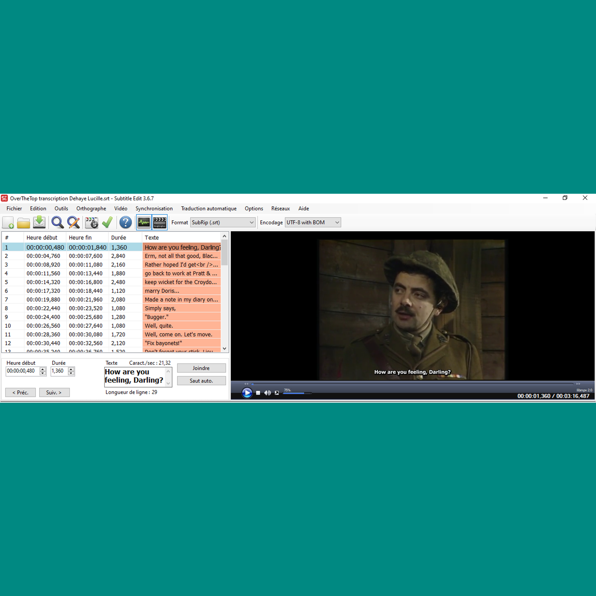
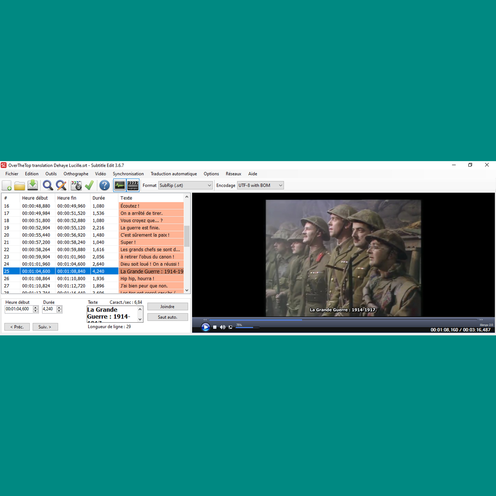
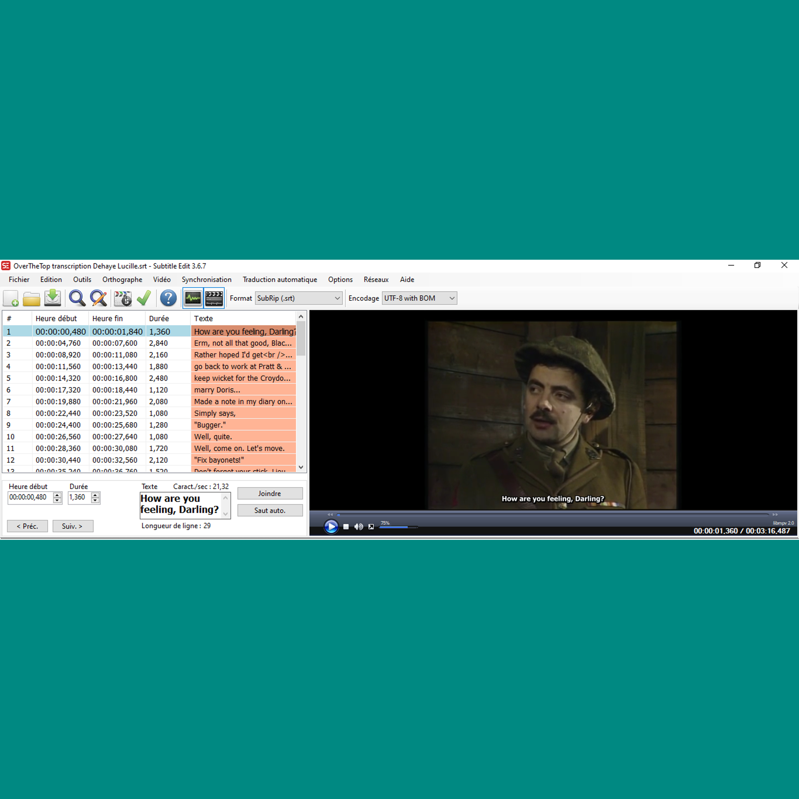
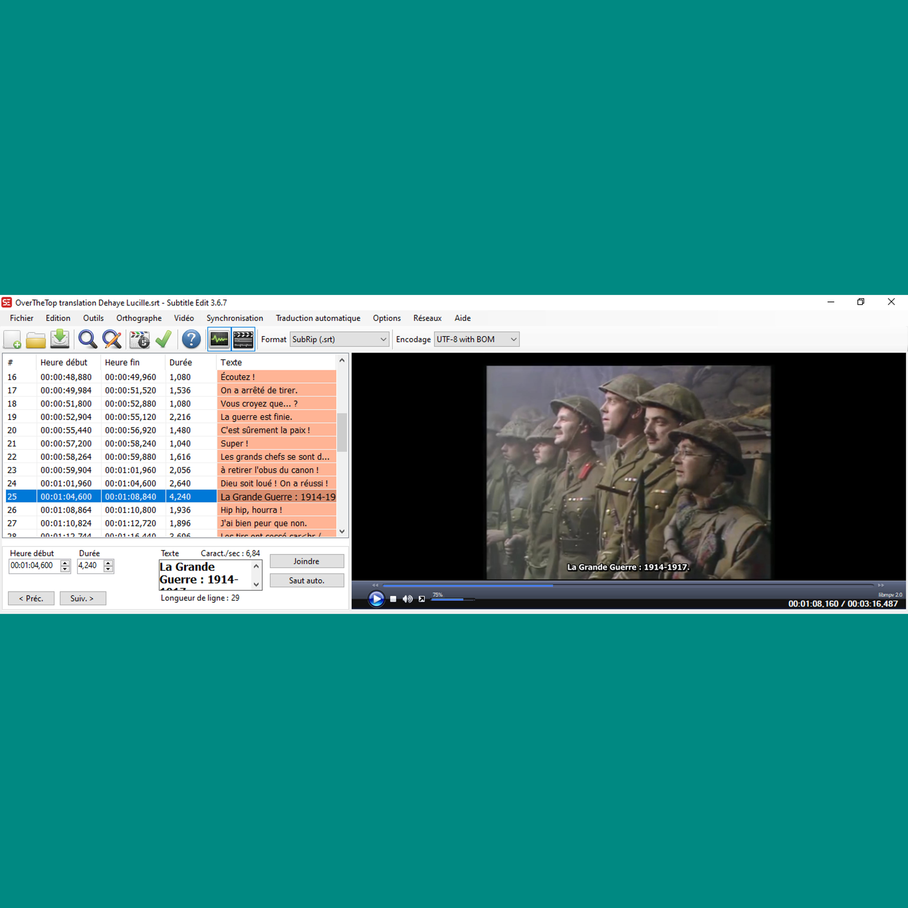

Experiencia laboral y formaciones
- Prácticas para la licenciatura
Medio laboral: Turismo (agosto de 2021)
Función laboral: Guía
- Profesión: Trabajadora de fábrica
Medio laboral: Industria metalúrgica
Duración: 1 mes y dos semanas (final de junio y julio de 2021)
- Profesión: Cajera (+ reponedora)
Duración: 9 meses (de marzo hasta noviembre de 2019)
- Prácticas durante el colegio
Medio laboral: Puericultura
Intereses personales
- Lenguas y culturas
- Leer
- Escuchar música
- Cuidar a los animales
- Pasear

 


